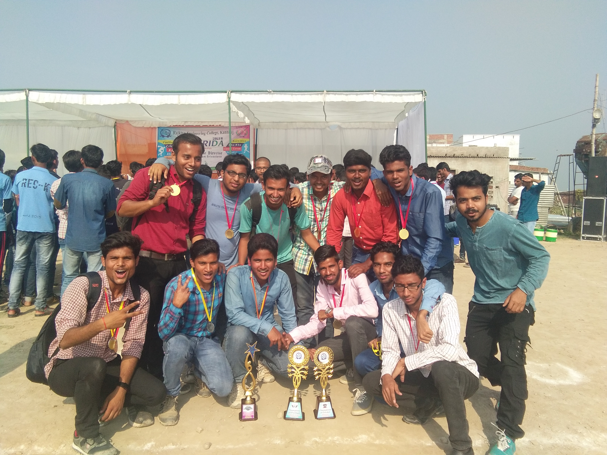

Our registration for second semester was scheduled on that day. We had to download registration form and other documents from college’s website after filling we had to submit it to college. We also had to pay fee via SBI collect mode to college bank account. I did everything two days before coming to hostel. I came with another train to Kanpur then to Kannauj by bus. I met some friends at Kanpur bus stand. They came there from Gorakhpur and they were Shiv Shakti, Arshad Hussain, and Vishal Gond. We came together to college. I complete all the procedures of registration and went back to hostel. Our Induction Programme was scheduled for upcoming week. I had decided to go back to home and would come to 30 January. I came out of hostel and found that Tahsin was also ready to go home, we became together. We took bus from Kannauj to Kanpur then took Poorva Express from Kanpur and reached Varanasi and from another train reached home on next day.
30 Jan 2018, Tuesday
I came back to hostel that day in afternoon. I heard about an unexpected thing happened that day in hostel, our hostel attendant’s bike was missing in the morning. He searched for it in the whole campus but he didn’t find anywhere. And then when a mess worker went to roof, he saw the bike was there. Out hostel have 4 floors. How it reached there, even no one else had key. Some chaotic elements put it there. Then with the help of some workers he put it down via stairs.
10 Feb 2018, Saturday
The Annual Sports Fest was announced to be held between 26 to 28 February. There were many sports in the list like Cricket, Football, Volleyball, Badminton, Kabaddi, Athletics and some other indoor games. I used to play Badminton & Kabaddi and learnt Volleyball at college so decided to take part in these. I went to the sports co-ordinator who was Rohit Maurya from my branch and told to put my name in these sports. He refused to do so, he told me that there is no space left in Volleyball and Kabaddi and also told to contact seniors. I went to our senior Vijay Yadav sir but he replied me that you might be injured during game and he also refused. So I took part only in Badmintonüò¢. I and Siddharth practice daily in the under construction building of Auditorium. Siddharth was very good in Badminton and also he guided me during fest. There was also different colour jersey for all branches. Our branch had black coloured Jersey; I had bought one small size T-shirt.
13 Feb 2018, Tuesday
On that day our first semester results were declared but our college had not submitted the exam fee to AKTU so result was pending till the submission of fee. Then on 27 Feb during our Sports Fest our results appeared and I got 666/900 marks and 7.6 SGPA. And my best friend Shiv Kumar got 664/900 marks and Suhail Iqbal was the topper. I was not happy with result because I had expected more than that.
26 Feb 2018, Monday
It was first day of finals of Sport’s Festival; I had won all the league matches in Badminton and finally qualified to Semi-final. My semi final match was early in the morning at 6:00 o’clock against Aditya Raj from my batch from electrical branch. Semi final was of only one set of 21 points. Aditya beat me by 21-11 points. The winner of the Badminton was Himanshu Sir, at 2nd place Siddharth Mishra and at 3rd Aditya Raj.
In the evening there was a Volleyball match between Electronics and Civil, and there was a rule that no one other than players will enter in the court, when the electronics scored the final point, one of the student entered the court and referee (Neeraj) declared the win of Civil. Then there was a fight like situation happened between Electronics and Civil branches. Everyone (CS & Electrical) was with electronics that for minor reason no team will be disqualified. And after a long conversation the matter was solved.
27 & 28 Feb 2018

There were only two strong teams in Football game; they were Electrical & Computer Science. CS had seniors who played very well. My hostel friends were in both teams so I went to see their match. The both team reached to final, and the final game was very interesting and competitive. Once during match, the referee gave red card to Rahul Sir for some improper behaviour then whole electrical team refused to play and sat outside the ground. And after some argument they started playing and after some time their goalkeeper got injured and CS‚Äôs goalkeeper Prateek also got injured in that match. Finally at the end Computer Science team became the winner of the match by 2-1.ü•≥
On the next day there was prize distribution ceremony and every winner team and person get awarded. And then we played Holi in the hostel and moved towards home to celebrate Holi festival which was on 2nd March.
06 Apr 2018, Friday
We had Workshops as lab in that semester; Md. Rajat Sir was our teacher. He had asked for the lab manuals and viva voce on next day. I had made file and which was completed and that day I lost my file somewhere. I asked in the WhatsApp group, every of my friends and visit every room of the floor in the search of my lab file but I didn’t get it. I had to make a new file, and to write about 50 pages in one night and also draw many figures. And few days later, when I went to Suhail’s room for some work, I found my lab file was there then I asked Suhail about that, he replied that it was there for last few days. He didn’t tell me a single time when I was searching my file. I was very angry at him that day.
Few days earlier, one more incident happened with me due to Suhail. There was a class of Physics of Dr Baghel sir and Suhail messaged in the college WhatsApp group from my phone that he will not take the class. And after lunch the teacher took class and many students could not attended it. Suhail was our CR then. Then in that evening out previous CR and his friends called me in their room and there was a small debate between us. They admonished about that because they had lost their one attendance.
One day also, Suhail took my roommate’s (Saurabh) earphone without asking anyone and when Saurabh searched everywhere but did not find. On next day Suhail returned back it and told that I gave him that earphone and Saurabh was very angry to me. “Suhail betrayed me many times but I forgave him and took a distance from our friendship”.
22 Apr 2018, Sunday
Prateek, Saurabh and I were best roommates & friends. We named our trio as “The Shield”, which was inspired from the “WWE tag team, The Shield”. There are three wrestlers in the team who are Roman Reigns, Seth Rollins and Dean Ambrose in that team. So Saurabh was ‘Roman Reigns’, Prateek was ‘Seth Rollins’ and I was ‘Dean Ambrose’ in our team. It was Sunday that day. We thought to do some crazy thing. We draw ‘The shield name and the logo of all three wrestlers’ on the wall in our room by pencils. Here is the picture.
29 Apr 2018, Sunday
I am huge huge fan of Marvel & Harry Potter movies❤️. I watched every movie more than 20 times and also read many comic books of Marvel. It was the beautiful day for me because ‘Avengers: Infinity War’ was released that day. Last time when Thor: Ragnarok was released in November we had not get a chance to go to watch in theatre. But this time, Prateek, Saurabh and I went to Kanpur to watch it in 3D in Miraj Cinema on first day first show. Usually Saurabh & Prateek woke up late in the morning but that day they woke at 5:00 am. We dressed up early and took the bus for Kanpur. The show was from 10:00 am to 1:00 pm. We saw the movie and after that we went to Z Square Mall to eat something and time pass. I and Saurabh love Pizza so ordered two large Pizzas for the three persons. But Prateek took only one bite from that and we (I & Saurabh) finished it hardly. After that we reached hostel past 8:00 pm. It was my first trip to Kanpur and I enjoyed it very well.
07-23 May 2018
Those were our end semester exam days. Exams were going good. But one day between exams, we got a notice on hostel notice board that “We had to leave the hostel before 31 May, and had to manage room outside the campus to live for further semesters”. There were 4 boy’s hostels in the college campus but only one of them is constructed completely. Others were under construction, sorry not under construction but they were waiting for government fund to get complete. Their constructions were stopped since 2016.
When exams got over, I and Prateek went Tirwa to search some rooms. Saurabh decided to live with his branch mates so he took flat somewhere else. My other friends were also searching for rooms here and there in Tirwaganj. Prateek also contacted his uncle who is in UP Fire Police at Tirwaganj Police Station to search rooms at Tirwa. One of my friends, Prince offered me to live with him. He had one empty room where he saw flat for himself. But some days later Prateek’s Uncle managed a room for us at Tirwa near Sarswati Shishu Mandir School. It is about 4 KM away from our college.
25 May 2018, Friday
Our exams were over. We were planning to go somewhere for fun. Arshad Hussain suggested us to come with him to Blue World Theme Park at Kanpur. We planned to go Kanpur that day (25 May). We were 5 persons (Saurabh Kushwaha, Prateek Dubey, Shiv Shakti Rai, Arshad Hussain and Me). I took permissions from my family and we leave hostel before 9 AM in the morning and reached there at 11 AM. We had fun there with slides, swimming, stunts and rides. We did many stunts in the pool and record in camera. A funny incident happened there, when we were trying different flips in the pool. Arshad was taking the video and Prateek thought to do stunts in front of camera, his leg slipped and fell down in the pool and got hit badly in his head. After getting out of wet side we went towards the rides and we were feeling hungry so we ate some food also there. We stayed there till 7 o’clock in the evening. We took bus to come back and reached hostel in late night. I was very tired so I slept without talking to mom and without dinner.
02 Jun 2018, Saturday
In the last few days from then our practical exams were held. The examiner who had come for ‚ÄòBasic Electrical Lab‚Äô was very funny; he asked us some funny questions other than syllabus. He asked me about my favourite mobile game, I was playing Candy Crush & Clash of Clans those days. So he asked me questions based on that. He also asked some funny questions from my group mates, he asked about Cricket from Shiv Kumar, told a girl to sing a song. One girl replied that she like fighting so he told her to slap anotherüòÇ.
On 2nd June, it was last day for our 2nd semester. On that day I took train to my home for the summer vacations. Vacation was for about two months whole June and till 20 July.
 I am huge huge fan of Marvel & Harry Potter movies❤️. I watched every movie more than 20 times and also read many comic books of Marvel. It was the beautiful day for me because ‘Avengers: Infinity War’ was released that day. Last time when Thor: Ragnarok was released in November we had not get a chance to go to watch in theatre. But this time, Prateek, Saurabh and I went to Kanpur to watch it in 3D in Miraj Cinema on first day first show. Usually Saurabh & Prateek woke up late in the morning but that day they woke at 5:00 am. We dressed up early and took the bus for Kanpur. The show was from 10:00 am to 1:00 pm. We saw the movie and after that we went to Z Square Mall to eat something and time pass. I and Saurabh love Pizza so ordered two large Pizzas for the three persons. But Prateek took only one bite from that and we (I & Saurabh) finished it hardly. After that we reached hostel past 8:00 pm. It was my first trip to Kanpur and I enjoyed it very well.
I am huge huge fan of Marvel & Harry Potter movies❤️. I watched every movie more than 20 times and also read many comic books of Marvel. It was the beautiful day for me because ‘Avengers: Infinity War’ was released that day. Last time when Thor: Ragnarok was released in November we had not get a chance to go to watch in theatre. But this time, Prateek, Saurabh and I went to Kanpur to watch it in 3D in Miraj Cinema on first day first show. Usually Saurabh & Prateek woke up late in the morning but that day they woke at 5:00 am. We dressed up early and took the bus for Kanpur. The show was from 10:00 am to 1:00 pm. We saw the movie and after that we went to Z Square Mall to eat something and time pass. I and Saurabh love Pizza so ordered two large Pizzas for the three persons. But Prateek took only one bite from that and we (I & Saurabh) finished it hardly. After that we reached hostel past 8:00 pm. It was my first trip to Kanpur and I enjoyed it very well.